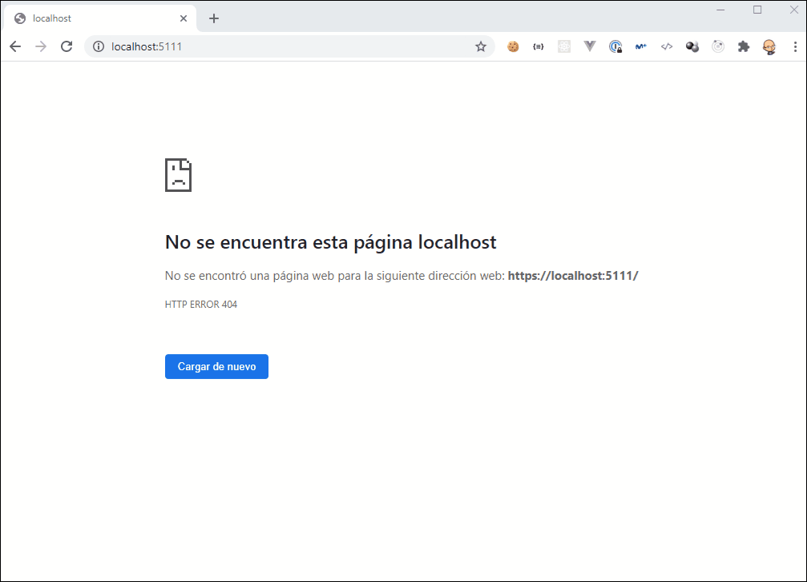

DISCLAIMER: I’m assuming you are familiar with ASP.NET Core Authentication and Authorization, well in this post we are not going to explain it. So if you are not familiar, I recommend you to visit the official documentation.
Last week a co-worker asked me about how they could securing the Hangfire Dashboard using an existing OpenID Connect Server, to be exact, using an IdentityServer4. Looking into the documentation, I found how to configure authorization in order to securing the access to the dashboard to avoid exposes sensitive information about your jobs, serialized arguments, etc. but it wasn’t enough, because they needed to authenticated with IdentityServer4.
Remember that authentication and authorization might sound similar but both are distinct security process. While the authentication is the act of verifying oneself, authorization is the process of verifying what you have access to. So first we need autenticated our users with IdentityServer4 and then we can do the authorization process based on roles, cliams, etc.
Once we have more clear the differences betwwen authentication and authorization it’s time to solve the challenge.
Using DashboardAuthorizationFilter + Middleware (Old School)
We are going to configure Hangfire Dashboard in the previous way of Endpoint Routing, a feature have added in ASP.NET Core 3.0 that it’s very powerfull and usefull. In the next point you’ll see the benefits of use this approach instead the old school way.
We going to start configuring the autentication. In our example we need to use two authentication schemes:
- Cookies: A cookie authentication scheme constructing the user’s identity from cookies. (Hangfire Dashboard will use this)
- OpenIdConnect: An authentication challenge is invoked by Authorization when an unauthenticated user requests an endpoint that requires authentication. (IdentityServer4)
services
.AddAuthentication(cfg =>
{
cfg.DefaultScheme = CookieAuthenticationDefaults.AuthenticationScheme;
cfg.DefaultChallengeScheme = OpenIdConnectDefaults.AuthenticationScheme;
})
.AddCookie()
.AddOpenIdConnect(cfg =>
{
cfg.Authority = "https://demo.identityserver.io";
cfg.ClientId = "interactive.confidential";
cfg.ClientSecret = "secret";
cfg.ResponseType = "code";
cfg.UsePkce = true;
cfg.Scope.Clear();
cfg.Scope.Add("openid");
cfg.Scope.Add("profile");
});
As you can see, I’m using IdentityServer 4 demo totally recommended for scenarios like demos or testing to avoid waste time.
Once we have configured the autentication, it’s time to securing our dashboard. The first thing we have to do is to add the authentication middleware. In the Configure method of our Startup class we need to use authentication:
app.UseAuthentication();
Next, we have to check if the user who access the Hangfire Dashboard have been previously authenticated (In our case using IdentityServer4). The most straighforward approach is using a middleware to check if the path belongs to the Hangfire Dashboard and if the user is authenticated:
app.Use(async (context, next) =>
{
if (context.Request.Path.Equals("/hangfire", StringComparison.OrdinalIgnoreCase)
&& !context.User.Identity.IsAuthenticated)
{
await context.ChallengeAsync();
return;
}
await next();
});
Finally, we need to configure the authorization in Hangfire Dashboard. We can change the behavior by passing our own implementation of IDashboardAuthorizationFilter interface:
app.UseHangfireDashboard(HangfireDashboardPath, new DashboardOptions
{
Authorization = new IDashboardAuthorizationFilter[]
{
new DashboardAuthorizationFilter()
}
});
In our DashboardAuthorizationFilter only we are checking if the user is authenticated, but we can check many things as roles, claims, etc.
public class DashboardAuthorizationFilter : IDashboardAuthorizationFilter
{
public bool Authorize([NotNull] DashboardContext context)
{
return context.GetHttpContext().User.Identity.IsAuthenticated;
}
}
You can check the results running the web application and navigating to the Hangfire Dashboard:

You can see the complete example in this link
Using EndpointRouting + Policy
As you can see in the previous example, we have authorized the access to the dashboard using an implementation of IDashboardAuthorizationFilter interface. In ASP.NET Core we have available a new authorization framework based on policies. This new approach decouple the authorization from the application logic and provides us flexible, extensible and reusable security model. If you want to know more about this model I recommend you to read the official documentation
This example it’s very similar to the previous one but we are going to change the Configure method to use Endpoint Routing.
We need to add authorization services. In the ConfigureServices method of our Startup class add this code:
services
.AddAuthorization(cfg =>
{
cfg.AddPolicy("Hangfire", cfgPolicy =>
{
cfgPolicy.AddRequirements().RequireAuthenticatedUser();
cfgPolicy.AddAuthenticationSchemes(OpenIdConnectDefaults.AuthenticationScheme);
});
})
... Omitted for brevity
We added a new policy with one requirement (User must be authenticated) and the OpenIdConnect authentication scheme.
In the Configure method in our Startup class we should add this code at the end:
app.UseAuthentication();
app.UseRouting();
app.UseAuthorization();
app.UseEndpoints(endpoints =>
{
endpoints.MapHangfireDashboard().RequireAuthorization("Hangfire");
});
As you can see, we are using Endpoint Routing to configure the dashboard. The cool thing is the use of RequireAuthorization method that we have applied to this particular endpoint. We don’t need to implement IDashboardAuthorizationFilter interface and we can use the policy that we have previously created using the ASP.NET Core authorization framework. This example is very basic but we can complicated the authorization as much as we want. When the user try to access the Hangfire Dashboard and is not authenticathed, ASP.NET Core Authorization framework use the DefaultChallengeScheme and the user will be redirected to our OpenIdConnect server (In our case IdentityServer4) and we don’t anymore our middleware to check if the user is authenticated and managed the challenge.
You can see the complete example in this link
Conclusion
In this post I’ve tried to show how straightforward is to securing Hangfire Dashboard with an OpenIdConnect Sever like IdentityServer4 using ASP.NET Core authentication and authorization and also how powerfull is the new Endpoint Routing feature introduced in ASP.NET Core 3.0.


Comments